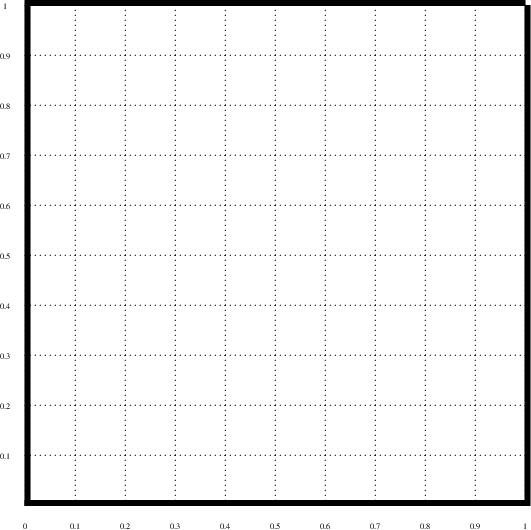

def placeBoarders (thickness, color):
bottom = pge.box (0.0, 0.0, 1.0, thickness, color).fix ()
left = pge.box (0.0, 0.0, thickness, 1.0, color).fix ()
right = pge.box (1.0-thickness, 0.0, thickness, 1.0, color)\
.fix ()
top = pge.box (0.0, 1.0-thickness, 1.0, thickness, color)\
.fix ()
return [bottom, left, right, top]
sides = placeBoarders (0.01, brown)
This document was produced using groff-1.22.